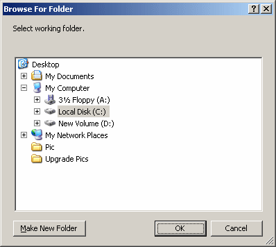
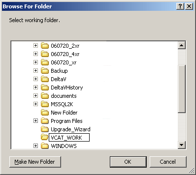
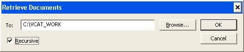
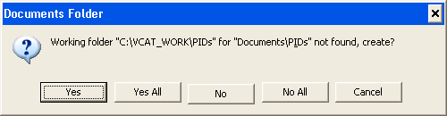
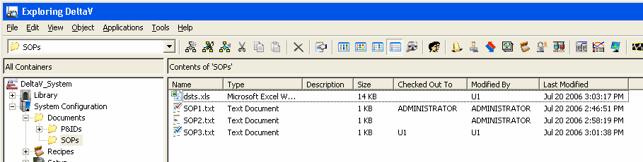

Before you can store documents in VCAT and work on them from DeltaV Explorer, you must create a folder hierarchy in DeltaV Explorer and move the documents you want to store in VCAT into that hierarchy. The folder hierarchy you create can be arbitrarily complex, consisting of as many subfolders as you need. You can explicitly set a different working folder for each folder in DeltaV Explorer. Alternatively, You can create a working folder structure that mirrors the folder hierarchy in DeltaV Explorer. A simple way to do this is:
-
Select the Documents folder, and then select Set Working Folder from the context menu.
If the working folder has not been previously set, the Browse For Folder dialog appears as shown.

-
Navigate to the location where you want to create a working folder structure, and then click Make New Folder.
A new folder appears in the dialog. Select Rename from the context menu and enter the name you want for the working folder (VCAT_WORK, for example) as shown in the following figure.

-
Click OK to accept the name and close the dialog.
Note: Each user must set working folders on each workstation. The working folders can be different for each user and each workstation.
-
Create the DeltaV Explorer folder hierarchy you need.
Select the Documents folder (or folders you created), and then select from the context menu. Folders are created named Document Foldernn. You can rename the folders.
-
Add documents to the hierarchy in DeltaV Explorer.
There are several ways to add documents to the hierarchy in DeltaV Explorer:
Select a folder and then select . You can rename the document after you created it.
Select a folder, and then select Add Documents. The Add Documents dialog appears. Navigate to documents, and then click Add.
Drag documents of any type from Windows Explorer to a folder in DeltaV Explorer.
Creating subfolders and adding documents to them in the DeltaV Explorer Documents folder adds them to the DeltaV database and the VCAT database. When you add documents they are automatically checked out of VCAT.
Before you edit a document you must set the working folder for the directory the document is in and retrieve the document. You can set the working folders for the entire Documents folder hierarchy in DeltaV Explorer and retrieve all the documents in the hierarchy at one time as follows.
-
Select the Documents folder, and then select Retrieve from the context menu.
The Retrieve Documents dialog appears with the working directory you previously set for the Documents folder.
-
Select Recursive on the dialog.

-
Click OK.
Because you have not set a working folder for the subfolders, the following dialog appears:

-
Click Yes All to create all of the subdirectories in the working folder and retrieve all the documents in the hierarchy.
If you subsequently add subfolders, working folders are set to the appropriate place in the working folder structure. You must still retrieve new folders and any documents you add, to new folders or existing folders, before you can edit these documents.
Note: If you change a folder name in DeltaV Explorer after setting a working folder for it, the links to the working folders are retained.
The following figure shows an example folder hierarchy consisting of two subfolders below the Documents folder. The SOPs directory contains an Excel workbook and three text documents. The Contents pane contains information about the documents in the current folder. For example:
dsts.xls is checked in (no check mark) and was last modified by user U1.
SOP1.txt is checked out to the current user (red check mark).
SOP2.txt is checked in (no check mark) and was last modified by ADMINISTRATOR.
SOP3.txt is checked out to another users (blue check mark), U1 in this case.
